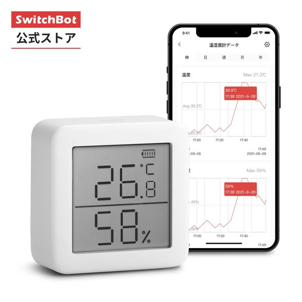
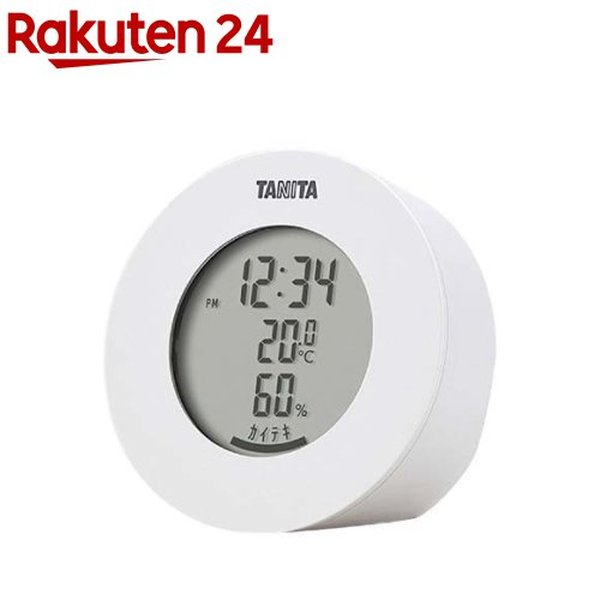
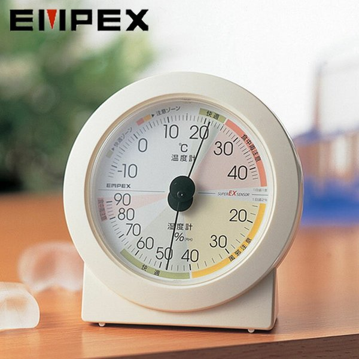
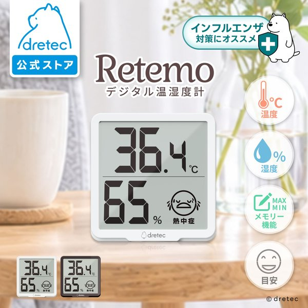
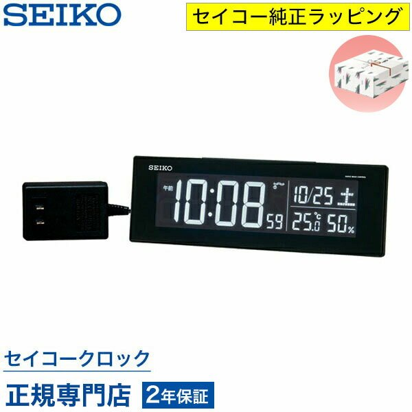
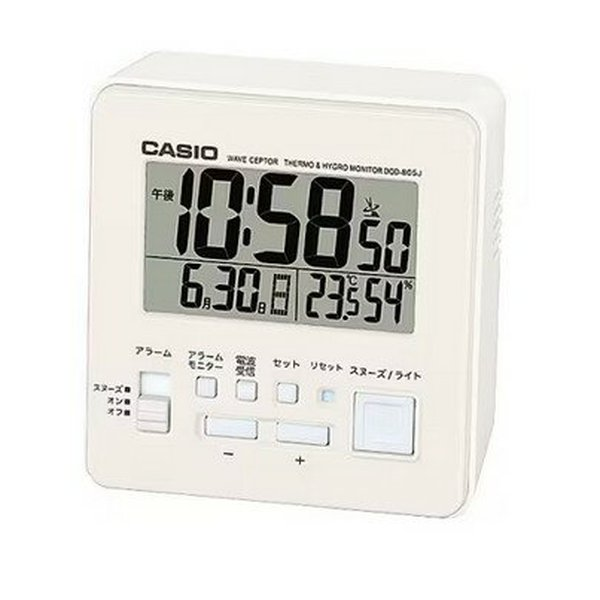
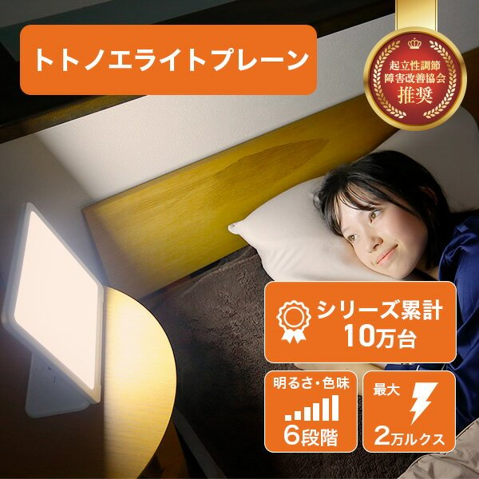
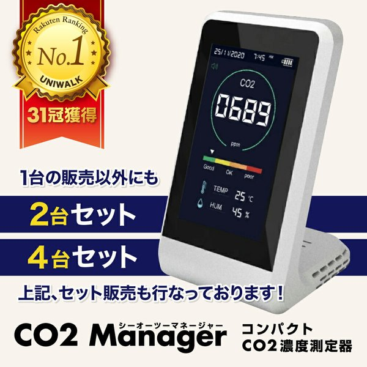
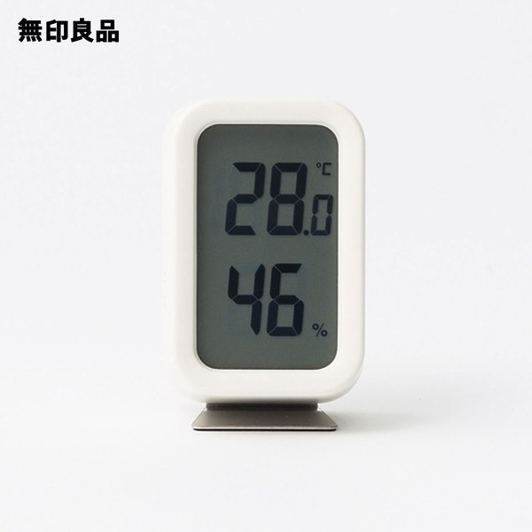
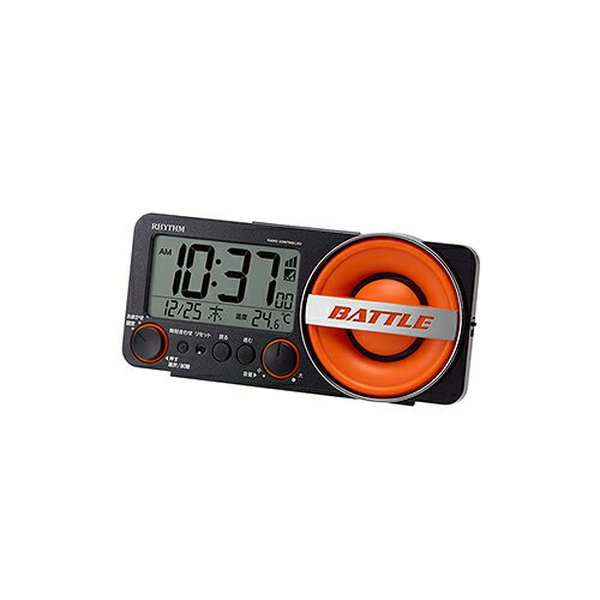

【2026年・ブラックフライデー】冬の乾燥・換気・朝起き改善10選｜SwitchBot・タニタ・エンペックス・ドリテック・セイコー・カシオ・トトノエライト・東亜産業・無印良品・リズムの温湿度計と時計を比較
冬の部屋は、暖房で乾燥し、窓を閉めて二酸化炭素がたまります。どちらも体の調子に効いてくるのに、数値を見ないと気づけません。だから温湿度計とCO2モニターは、冬にこそ効く道具です。
選ぶ軸は3つです。「まず数値を記録したいか」。記録するならアプリ連携、見るだけならアナログや表示だけのモデルで足ります。「次に置く場所」。枕元なら光目覚ましやアラーム付き、リビングなら壁掛けの電波時計が向きます。「最後に換気の目安」。CO2モニターは、締め切った部屋の空気を数字で示してくれます。なお、レビュー件数が50件に満たない商品は記事内に実数を明記しています。
本記事では、楽天市場で人気・高評価の温湿度計・電波時計・光目覚まし・CO2モニター10選を、実売価格とレビュー評価つきで写真付き紹介します。
- おすすめ10選 スペック・特徴比較表
- BEST 1｜SwitchBot 温湿度計
- BEST 2｜タニタ デジタル温湿度計 TT-585
- BEST 3｜エンペックス EX-2831 高精度UD温・湿度計
- BEST 4｜ドリテック デジタル温湿度計 リテーモ
- BEST 5｜セイコークロック DL305K 電波置き時計
- BEST 6｜カシオ DQD-805J-7JF 電波置き時計（温湿度計測）
- BEST 7｜moonmoon トトノエライトプレーン 光目覚まし時計
- BEST 8｜東亜産業 CO2マネージャー
- BEST 9｜無印良品 デジタル温湿度計 MJ-DTHW1
- BEST 10｜リズム フィットウェーブバトル230 大音量電波めざまし時計
- 【読者負担0円】買わなくても得する無料サービス
- まとめ：温湿度計・時計・CO2モニター10選の選び方
| 順位 | 商品名 | ブランド | 最大の特徴・おすすめ理由 | 総合評価 |
|---|---|---|---|---|
| BEST 1 | SwitchBot 温湿度計 | SwitchBot（スイッチボット） | スマホで外出先から室温を確認できる | 4.59 |
| BEST 2 | タニタ デジタル温湿度計 TT-585 | タニタ（TANITA） | 温度・湿度・時刻を1台で表示 | 4.46 |
| BEST 3 | エンペックス EX-2831 高精度UD温・湿度計 | エンペックス（EMPEX） | 電池不要で針が動き続ける | 4.85 |
| BEST 4 | ドリテック デジタル温湿度計 リテーモ | ドリテック（dretec） | 数字が大きく読みやすい | 5.00 |
| BEST 5 | セイコークロック DL305K 電波置き時計 | セイコー（SEIKO） | 電波で時刻が自動で合う | 4.16 |
| BEST 6 | カシオ DQD-805J-7JF 電波置き時計（温湿度計測） | カシオ（CASIO） | 時刻と温湿度を1台で表示 | 4.14 |
| BEST 7 | moonmoon トトノエライトプレーン 光目覚まし時計 | トトノエライト（moonmoon） | 光が徐々に明るくなって起きられる | 3.96 |
| BEST 8 | 東亜産業 CO2マネージャー | 東亜産業（TOAMIT） | 換気のタイミングが数値でわかる | 4.24 |
| BEST 9 | 無印良品 デジタル温湿度計 MJ-DTHW1 | 無印良品 | 余計な装飾のないデザイン | 5.00 |
| BEST 10 | リズム フィットウェーブバトル230 大音量電波めざまし時計 | リズム（RHYTHM） | 大音量で起きやすい | 5.00 |
SwitchBot 温湿度計

SwitchBotの温湿度計は、スマホのアプリで室内の温度と湿度を確認できるデジタル温湿度計です。スイス製センサーを使い、数値の変化をグラフで追えます。ほかのSwitchBot機器と組み合わせると、湿度が下がったら加湿器を動かすといった自動化もできます。楽天市場での実売価格は約1,880円（2026年11月時点）。
- スマホで外出先から室温を確認できる
- スイス製センサーで数値が安定している
- ほかの家電と連携して自動化できる
- アプリの初期設定にBluetooth接続が必要
タニタ デジタル温湿度計 TT-585

タニタのTT-585は、時刻も表示できる丸型のデジタル温湿度計です。温度と湿度に加えて時計が並び、卓上に置いてもマグネットで壁に貼っても使えます。白い丸いボディで、リビングの棚に置いても浮きません。楽天市場での実売価格は約1,800円（2026年11月時点）。
- 温度・湿度・時刻を1台で表示
- 卓上にも壁掛けにも使える
- 文字が大きく離れても読みやすい
- 画面が小さいので、離れた場所からは見えにくい
エンペックス EX-2831 高精度UD温・湿度計

エンペックスのEX-2831は、アナログ針で温度と湿度を示す温湿度計です。電池が要らず、針の位置で乾燥しているかどうかがひと目でわかります。木目調の文字盤で、リビングや寝室のインテリアになじむデザインです。楽天市場での実売価格は約1,867円（2026年11月時点）。
- 電池不要で針が動き続ける
- ひと目で湿度がわかる大きな文字盤
- 木目調でインテリアになじむ
- レビューは41件で、細かい数値を記録する用途には向かない
ドリテック デジタル温湿度計 リテーモ

ドリテックのリテーモは、卓上に置けるコンパクトなデジタル温湿度計です。数字が大きく、離れた場所からでも温度と湿度が読めます。インフルエンザや熱中症の目安を顔のマークで示すので、家族で見ながら対策できます。楽天市場での実売価格は約1,518円（2026年11月時点）。
- 数字が大きく読みやすい
- 顔マークで快適度がわかる
- スタンド付きで置くだけ
- レビューは19件と少なく、色は実物で確認したい
セイコークロック DL305K 電波置き時計

セイコークロックのDL305Kは、電波を受信して時刻を合わせるデジタル置き時計です。電池を入れれば正しい時刻になるので、時刻合わせの手間がありません。目覚まし機能付きで、枕元に置く時計としても使えます。楽天市場での実売価格は約8,662円（2026年11月時点）。
- 電波で時刻が自動で合う
- 目覚まし付きで枕元に置ける
- 時計ブランドの安心感
- 電波の届きにくい場所では時刻が合わないことがある
カシオ DQD-805J-7JF 電波置き時計（温湿度計測）

カシオのDQD-805Jは、電波時計に温度と湿度の計測を足した置き時計です。時刻・温度・湿度を1台で見られるので、寝室やリビングの環境を測るのに向いています。アラーム付きで、白いボディは棚になじみます。楽天市場での実売価格は約1,958円（2026年11月時点）。
- 時刻と温湿度を1台で表示
- 電波で時刻が自動で合う
- アラーム付き
- レビューは7件と少なく、購入前に画面の見やすさを確認したい
moonmoon トトノエライトプレーン 光目覚まし時計

moonmoonのトトノエライトプレーンは、設定した時刻に向けて光が少しずつ明るくなる光目覚まし時計です。音だけで起こすのではなく、光で体を目覚めさせます。LEDライトは調光・調色ができ、消灯のタイマーや角度も変えられるので、ベッドサイドライトとしても使えます。楽天市場での実売価格は約16,920円（2026年11月時点）。
- 光が徐々に明るくなって起きられる
- 調光・調色できるLEDライト
- ベッドサイドライトとしても使える
- レビューは515件で、光だけで起きるには慣れが必要
東亜産業 CO2マネージャー

東亜産業のCO2マネージャーは、部屋の二酸化炭素濃度を表示するCO2モニターです。NDIR方式のセンサーで濃度を測り、数値が上がるとアラートで換気を促します。温度と湿度も同時に表示でき、冬に締め切った部屋の換気の目安になります。楽天市場での実売価格は約6,479円（2026年11月時点）。
- 換気のタイミングが数値でわかる
- NDIRセンサーで濃度を測る
- 温度と湿度も表示できる
- 充電式なので、数日おきの充電が必要
無印良品 デジタル温湿度計 MJ-DTHW1

無印良品のデジタル温湿度計は、白い四角いボディに大きな数字を並べた温湿度計です。余計な装飾がないので、どんな部屋にも置けます。スタンドで立てても壁に掛けても使える2通り仕様です。楽天市場での実売価格は約2,990円（2026年11月時点）。
- 余計な装飾のないデザイン
- 数字が大きく見やすい
- 置き型と壁掛けの2通りで使える
- レビューは4件と少なく、表示の細かさは実物で確かめたい
リズム フィットウェーブバトル230 大音量電波めざまし時計

リズムのフィットウェーブバトル230は、大音量で鳴る電波デジタルのめざまし時計です。なかなか起きられない人向けに、アラームの音量を強く設定できます。電波で時刻が合うので、寝る前に時刻を合わせ直す必要がありません。楽天市場での実売価格は約4,537円（2026年11月時点）。
- 大音量で起きやすい
- 電波で時刻が自動で合う
- デジタル表示で読みやすい
- レビューは2件と少なく、音量の感じ方は実機で確かめたい
この記事の商品を買う前に、まずは無料で得する選択肢をチェック。どれも登録・利用は0円で、無料期間中に解約すれば料金はかかりません。読みたい雑誌がある人、ポイントを貯めたい人、アンケートなら気軽という人、それぞれに合うものを選べます。
初回31日無料・無料期間中に解約すれば0円 → 楽天ポイントモール｜登録無料で毎日ポイ活
買い物なしでもポイントが貯まる無料サービス → 楽天インサイト｜アンケートに答えてポイント
登録無料・すきま時間のアンケートで貯まる → 楽天カード｜年会費永年無料
新規発行・年会費ずっと0円 →
4つのサービスの違いと使い分けは「出費0円で得する！買わずにポイントが貯まる無料サービス厳選4選」でまとめています。
💡 まとめ：温湿度計・時計・CO2モニター10選の選び方
冬の部屋は、まず温湿度計で状態を知ることから始まります。スマホで記録するならSwitchBot、電池なしで見たいならエンペックスのEX-2831、時刻も一緒に見たいならタニタのTT-585や無印良品のデジタル温湿度計。朝の目覚めは、光で起こすトトノエライトか、大音量のリズム。枕元の時計は電波式のセイコーDL305KとカシオDQD-805J。換気は東亜産業のCO2マネージャーで数値を見ながら、窓を開ける習慣と組み合わせると続きます。
楽天市場では「5と0のつく日」や「お買い物マラソン」などのキャンペーンに合わせて購入すると、ポイント還元が最大化してお得に手に入ります。ぜひチェックしてみてくださいね。